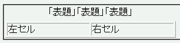
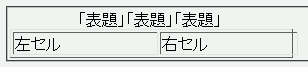

幅を指定したテーブルセルがテーブルの外枠から右方向にはみ出て表示されてしまう。特に、表題（caption要素）に '「' や '”' など、括弧やクォーテーション類の文字が使われている場合に発生しやすい。
<table border="1" style="width:40%;"> <caption>「表題」「表題」「表題」</caption> <tr> <td>左セル</td> <td style="width:50%;">右セル</td> </tr> </table>
| 左セル | 右セル |
右のセルの幅はテーブル幅の50%にしています。
WinIE6.0での表示
Opera6.05での表示
Opera6.05では不具合の発生が確認されました。Opera7.0では標準・互換モードともに不具合の発生は確認されませんでした。